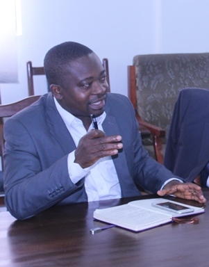

The Institute of Applied Science and Technology’s (IAST) Interactions with Executives of the Association of Ghana Industries
The Institute of Applied Science and Technology (IAST) has held an interaction session with the management of the Association Ghana Industries (AGI). The meeting which was chaired by Mr. E.K. Gyimah, the Chairman of the AGI’s Chemical Sector and a member of IAST Advisory Board, provided the IAST-University of Ghana team with an overview of the AGI’s activities, key challenges of its members and how the IAST can appropriately engage the AGI for mutual benefits.
Image: Participants during the interaction session
Dr. David Dodoo-Arhin, the Acting Director of the IAST, who led the delegation from the University of Ghana, gave an overview of the institute, what it seeks to achieve and its core mandate. He informed the meeting that Institute of Applied Science and Technology was established by the University of Ghana to serve as a platform where linkages between industry, communities and academia can be strengthened and solutions found to national challenges in manufacturing, processing and other key sectors through research and application. This he said, is achieved through its interactions with industry and communities to identify and help solve their science, technology and innovation problems.
Image: Mr. James Asare –Adjei (AGI president), Mr. E.K Gyimah (AGI & IAST advisory board member), Mr. Ato Panford (AGI & IAST advisory board member),
and. Dr. David Dodoo-Arhin (Ag. IAST Director).
On their part, Prof. Robert Kingsford Adaboh (Ag. Dean, School of Physical and Mathematical Sciences) and Prof. Boateng Onwona-Agyeman (Dean, School of Engineering Sciences) also emphasized the need for industry to collaborate with the University of Ghana to acquire and synchronize science and research with what businesses are currently doing. They informed the AGI that most of the chemicals and products that AGI members import can be done in the University and suggested to the AGI to challenge the scientists and engineers of University of Ghana. They also encouraged the AGI members to visit the University laboratories and observe for themselves the capabilities of University of Ghana researchers. The AGI and industry was further encouraged to financially support R&D activities and students training at the University especially at the postgraduate (Masters and PhD) level which will be beneficial to industry and national development. The UG team also asked the AGI to consider offering placement for PhD students to undertake their experiential learning periods with industry.
Image: Contributions from Prof. Kingsford-Adaboh (Ag. Dean, School of Physical & Mathematical Sciences) and
Prof. Boateng Onwona-Agyeman (Dean, School of Engineering Sciences)
The President of the AGI, Mr. James Asare –Adjei on his part, advised the University to market its research findings as well as offer consultancy services to industry. He further reiterated the need for the University students’ industrial internship programmes to be industry needs assessments driven where students identify industry problems with the goal of finding solutions to them as part of their university training and industrial experience.
Image: The President of AGI, Mr. James Asare –Adjei addressing the meeting. Looking on from right is the Vice President, Mr. Humphrey Ayim-Darke
The AGI urged the IAST to work towards troubleshooting the challenges of the SMEs especially in the food processing sector to find tailor-made solutions to such challenges. This could be through the establishment of programmes by the IAST and its industry partners to collaborate with the various R&D sections of industries to share and transfer knowledge. Members cited examples of partnerships with the University of Ghana Business school, the School of Engineering Sciences and Department of Nutrition and Food Science at the University that has been mutually beneficial.

Image: CEO of AGI, Mr. Seth Twum Akwaboah making a point at the meeting
It was also agreed that a Memorandum of Understanding be developed and signed to drive the relationship between IAST and the AGI. The AGI was represented by President of the AGI, Mr. James Asare –Adjei, Vice President, Mr. Humphrey Ayim-Darke, the Chief Executive Officer, Mr. Seth Twum Akwaboah and the Chairpersons of the Beverages; Hospitality and Tourism; Chemical; SME; Export and Food Processing Sectors. The university of Ghana was represented by IAST, School of Physical and Mathematical Sciences and the School of Engineering Sciences.
Image: Participants of the meeting (University of Ghana and AGI team)